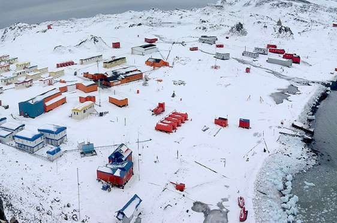

Villa Las Estrellas
Villa Las Estrellas (English: "The Stars Village") is a Chilean town and research station on King George Island within the Chilean Antarctic claim, the Chilean Antarctic Territory, and also within the Argentine and British Antarctic claims. The Chilean government considers it to be in Antártica Commune, Antártica Chilena Province, Magallanes and Antártica Chilena Region. It is located on President Eduardo Frei Montalva Base, a military base. It is the larger and one of only two civilian settlements on Antarctica (the other being Argentina's Esperanza Base). It has a summer population of 150 and a winter population of 80.
